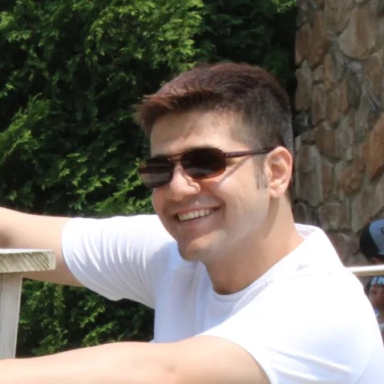
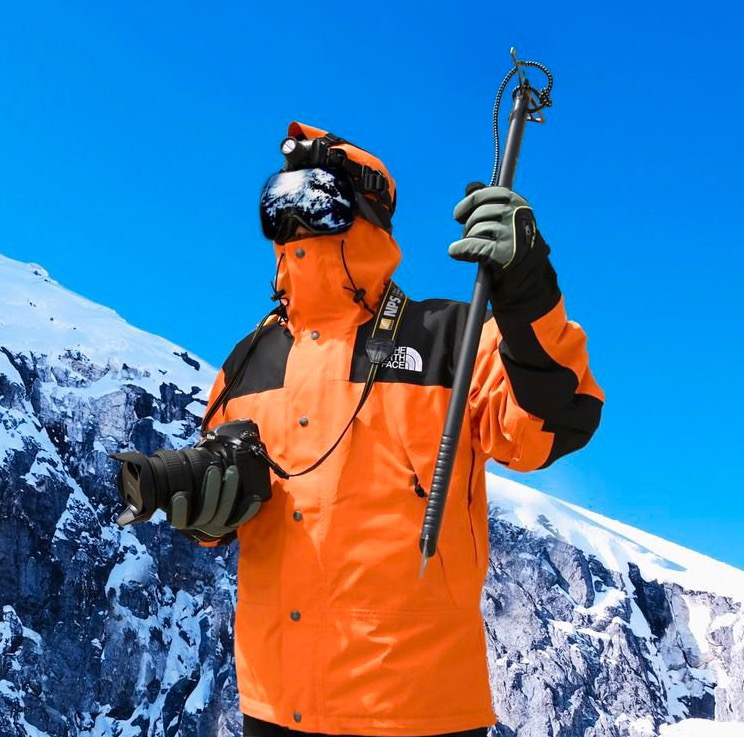
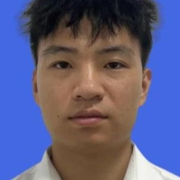

chenliang.xu [at] rochester [dot] edu
3005 Wegmans Hall
I teach machines to understand the world through video, sound, and language together. I am a tenured Associate Professor of Computer Science at the University of Rochester and an affiliated faculty of the Goergen Institute for Data Science and Artificial Intelligence, working at the intersection of computer vision, audio-visual learning, and trustworthy AI.
My research has advanced how machines see, hear, and reason about dynamic visual scenes, with work published at CVPR, NeurIPS, ICCV, ECCV, ICLR, and ICML, and supported by DARPA, ARPA-H, NIH, NSF, DOE, Meta, and Sony. My PhD graduates hold tenure-track faculty positions and research roles at top industry labs including Meta, Tencent, Microsoft AI, and Adobe.
I received my Ph.D. from the University of Michigan, Ann Arbor, in 2016. I am a recipient of the 2025 Edmund A. Hajim Outstanding Faculty Award from the Hajim School of Engineering & Applied Sciences and was previously honored with the James P. Wilmot Distinguished Professorship.
CV · Bio · Google Scholar · DBLP · Twitter
Prospective Students: Please apply to the URCS PhD program and mention my name in your personal statement.

Ali Vosoughi
Luchuan Song Zeliang Zhang Susan Liang Yolo Yunlong Tang Mingqian Feng
Dongdong Nian